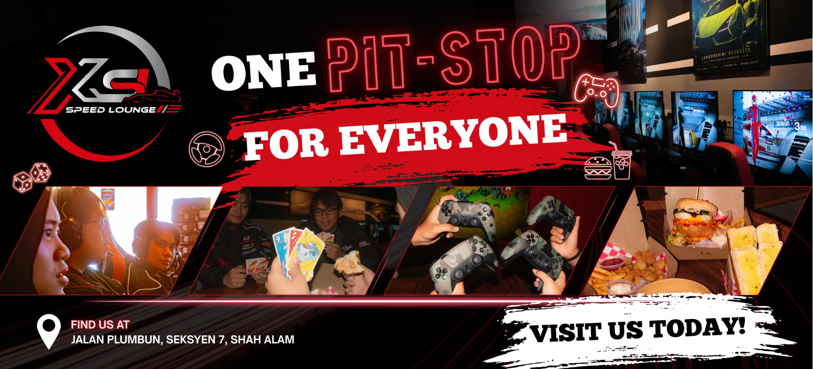
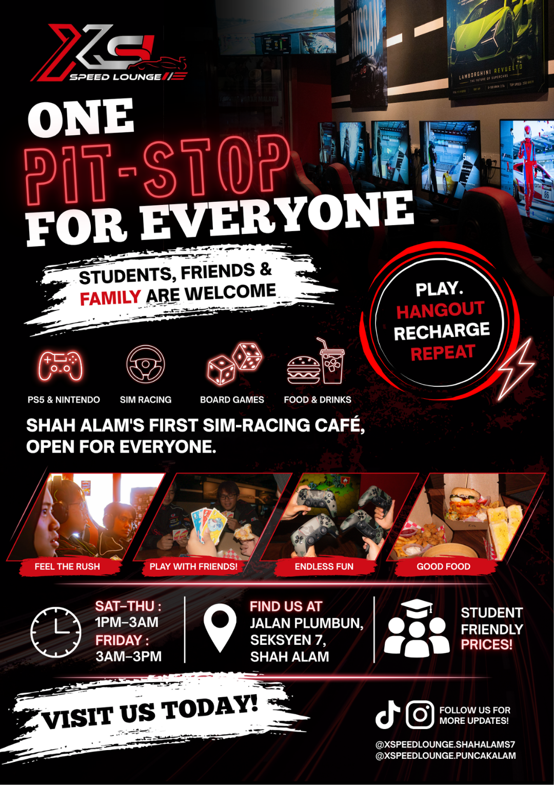

ADVERTISING CAMPAIGN
ONE
PIT-STOP
FOR EVERYONE
YOUR RECHARGE PIT STOP
A strategic brand campaign that repositions XSpeed Lounge from a gaming-only venue into an inclusive social café — a place where friends, families, and communities can pause, connect, and recharge.

THE CHALLENGE
Why XSpeed Lounge Needed A New Identity
XSpeed Lounge had the potential to become more than a gaming café. However, limited awareness and a narrow perception prevented the brand from reaching a wider audience beyond existing gamers.
57.1%
of respondents had never visited XSpeed Lounge, highlighting limited brand awareness.
48.5%
perceived gaming cafés as social spaces, showing the misconception that XSpeed was only for gamers.
43
respondents analysed to understand audience behaviour and brand perception.
CONSUMER INSIGHT
People Don't Just Need A Place To Play.
They Need A Place To Recharge.
Through consumer research, we discovered that XSpeed Lounge had the opportunity to appeal beyond traditional gamers. Students and young adults are constantly balancing academic pressure, work commitments, and social expectations. They are looking for accessible spaces where they can relax, connect with friends, and create memorable experiences.
This shifted the brand perception from a gaming café into a lifestyle destination — a place where everyone is welcomed to stop, recharge, and continue their journey.
THE BIG IDEA
THE ULTIMATE
PIT STOP
Positioning XSpeed Lounge as a lifestyle pit stop where everyone can pause, recharge, and reconnect through food, gaming, and shared experiences.
Take a break from daily routines.
Enjoy food, games, and meaningful connections.
Leave refreshed and ready for the next journey.
CAMPAIGN EXECUTION
Turning The Pit Stop Into A Brand Experience
FIRST IMPRESSION
Digital Campaign
To introduce XSpeed Lounge as more than a gaming café, we developed a series of short-form TikTok videos showcasing different audiences enjoying the space. Each video reinforces the idea of XSpeed Lounge as an inclusive pit stop where everyone can relax, connect, and recharge.
HERO CONTENT
02TVC Campaign
To reinforce the campaign positioning, we developed a 30-second television commercial that reintroduced XSpeed Lounge through a light-hearted family storyline. Rather than focusing solely on gaming, the commercial highlights moments of connection, laughter, and shared experiences—positioning XSpeed Lounge as a welcoming pit stop for everyone.
CAMPAIGN ROLLOUT
03Campaign Touchpoints
To reinforce the campaign beyond digital platforms, the visual identity was extended across outdoor advertising and promotional materials, creating a consistent experience wherever audiences encountered the brand.


Promotional Poster
The poster adapts the "Ultimate Pit Stop" concept into a bold promotional format, encouraging visitors to experience XSpeed Lounge as a welcoming destination for everyone.
MY ROLE
Account Planner: Building The Strategy Behind The Pit Stop
As the Account Planner, I served as the strategic bridge between consumer insights, brand positioning, and campaign execution. My role focused on understanding the audience, identifying opportunities, and ensuring every campaign touchpoint supported the brand objective.
01
Consumer Research
Analysed survey findings from 43 respondents to identify audience behaviour, demographics, and misconceptions surrounding gaming cafés.
02
Brand Positioning
Developed the "Ultimate Pit Stop" positioning, transforming XSpeed Lounge from a gaming venue into an inclusive social destination.
03
Audience Strategy
Identified key audience segments including students, social groups, motorsport enthusiasts, and corporate teams.
04
Media Planning
Selected communication channels based on audience behaviour, including TikTok, Threads, radio, digital billboards, and print materials.
05
Performance Tracking
Monitored campaign performance through engagement metrics including views, watch time, completion rates, and audience interaction.
PROJECT REFLECTION
Creating A Brand That Goes Beyond Its Category
Working on XSpeed Lounge allowed me to experience the role of an Account Planner in transforming consumer insights into a meaningful brand direction.
Through research, audience analysis, and strategic positioning, I helped shift the perception of XSpeed Lounge from a gaming-focused venue into an inclusive lifestyle destination where people can connect, relax, and recharge.
The Key Takeaway
A successful campaign is not only about promoting a product or service — it is about understanding people and creating experiences that fit naturally into their lives.